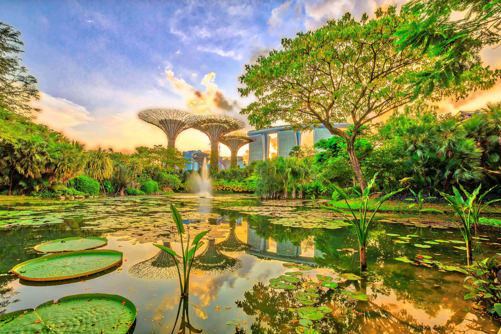
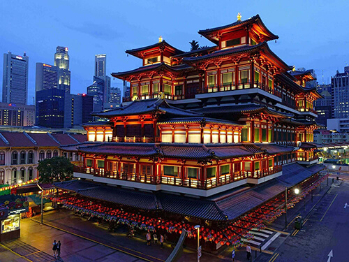

Singapore
The Gateway to Asia
A Green City in a Garden
Singapore is one of the world’s greenest cities, with almost half of the entire country covered in trees. More than 40% of Singapore is green, in the form of nature reserves, gardens, parks and skyrise greenery. Singapore’s green spaces, integrated within its vibrant cityscape, make it a top destination for tourists seeking both nature and modern attractions. Learn More
A Fusion of Cultures
Singaporean culture is a vibrant blend of diverse traditions, reflecting the country’s multicultural population. With Chinese, Malay, Indian, and Eurasian communities coexisting, the culture embraces various languages and customs. Singapore's cuisine is a major cultural highlight, blending flavors from all these communities, with dishes like laksa, chicken rice, and satay.